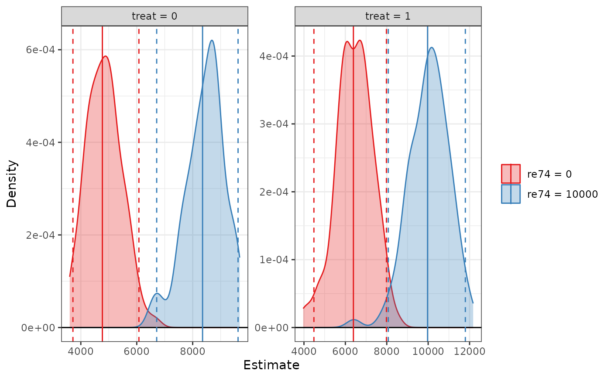
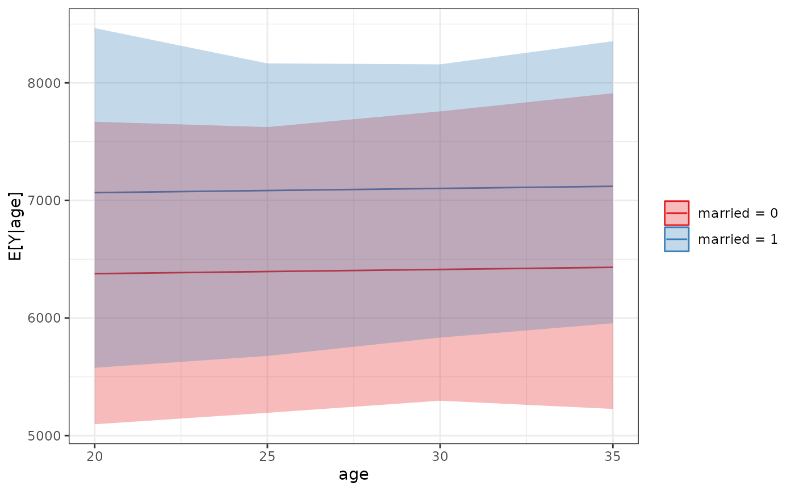

sim_setx() is a wrapper for sim_apply() that computes predicted values of
the outcome at specified values of the predictors, sometimes called marginal
predictions. One can also compute the difference between two marginal
predictions (the "first difference"). Although any function that accepted
clarify_est objects can be used with sim_setx() output objects, a
special plotting function, plot.clarify_setx(), can be used to plot marginal
predictions.
Arguments
- sim
a
clarify_simobject; the output of a call tosim()ormisim().- x
a named list of values each predictor should take defining a reference grid of predictor values, e.g.,
list(v1 = 1:4, v2 = c("A", "B")). Any omitted predictors are fixed at a "typical" value. See Details. Whenx1is specified,xshould identify a single reference unit.For
print(), aclarify_setxobject.- x1
a named list of the value each predictor should take to compute the first difference from the predictor combination specified in
x.x1can only identify a single unit. See Details.- outcome
a string containing the name of the outcome or outcome level for multivariate (multiple outcomes) or multi-category outcomes. Ignored for univariate (single outcome) and binary outcomes.
- type
a string containing the type of predicted values (e.g., the link or the response). Passed to
marginaleffects::get_predict()and eventually topredict()in most cases. The default and allowable option depend on the type of model supplied, but almost always corresponds to the response scale (e.g., predicted probabilities for binomial models).- verbose
logical; whether to display a text progress bar indicating progress and estimated time remaining for the procedure. Default isTRUE.- cl
a cluster object created by
parallel::makeCluster(), or an integer to indicate the number of child-processes (integer values are ignored on Windows) for parallel evaluations. Seepbapply::pblapply()for details. IfNULL, no parallelization will take place.- digits
the minimum number of significant digits to be used; passed to
print.data.frame().- max.ests
the maximum number of estimates to display.
- ...
optional arguments passed to
FUN.
Value
a clarify_setx object, which inherits from clarify_est and is similar to the output of sim_apply(), with the following additional attributes:
"setx"- a data frame containing the values at which predictions are to be made"fd"- whether or not the first difference is to be computed; set toTRUEifx1is specified andFALSEotherwise
Details
x should be a named list of predictor values that will be crossed
to form a reference grid for the marginal predictions. Any predictors not
set in x are assigned their "typical" value, which, for factor,
character, logical, and binary variables is the mode, for numeric variables
is the mean, and for ordered variables is the median. These values can be
seen in the "setx" attribute of the output object. If x is empty, a
prediction will be made at a point corresponding to the typical value of
every predictor. Estimates are identified (in summary(), etc.) only by
the variables that differ across predictions.
When x1 is supplied, the first difference is computed, which here is
considered as the difference between two marginal predictions. One marginal
prediction must be specified in x and another, ideally with a single
predictor changed, specified in x1.
See also
sim_apply(), which provides a general interface to computing any
quantities for simulation-based inference; plot.clarify_setx() for plotting the
output of a call to sim_setx(); summary.clarify_est() for computing
p-values and confidence intervals for the estimated quantities.
Examples
data("lalonde", package = "MatchIt")
fit <- lm(re78 ~ treat + age + educ + married + race + re74,
data = lalonde)
# Simulate coefficients
set.seed(123)
s <- sim(fit, n = 100)
# Predicted values at specified values of treat, typical
# values for other predictors
est <- sim_setx(s, x = list(treat = 0:1,
re74 = c(0, 10000)),
verbose = FALSE)
summary(est)
#> Estimate 2.5 % 97.5 %
#> treat = 0, re74 = 0 4771 3645 5841
#> treat = 1, re74 = 0 6389 4653 8147
#> treat = 0, re74 = 10000 8353 7106 9539
#> treat = 1, re74 = 10000 9971 8083 12092
plot(est)

# Predicted values at specified grid of values, typical
# values for other predictors
est <- sim_setx(s, x = list(age = c(20, 25, 30, 35),
married = 0:1),
verbose = FALSE)
summary(est)
#> Estimate 2.5 % 97.5 %
#> age = 20, married = 0 6377 5314 7439
#> age = 25, married = 0 6395 5273 7424
#> age = 30, married = 0 6413 5216 7555
#> age = 35, married = 0 6431 5136 7700
#> age = 20, married = 1 7066 6000 8512
#> age = 25, married = 1 7084 6164 8266
#> age = 30, married = 1 7102 6249 8077
#> age = 35, married = 1 7120 6122 8226
plot(est)

# First differences of treat at specified value of
# race, typical values for other predictors
est <- sim_setx(s, x = list(treat = 0, race = "hispan"),
x1 = list(treat = 1, race = "hispan"),
verbose = FALSE)
summary(est)
#> Estimate 2.5 % 97.5 %
#> treat = 0 7054 5731 8592
#> treat = 1 8672 6403 11112
#> FD 1618 268 3078
plot(est)